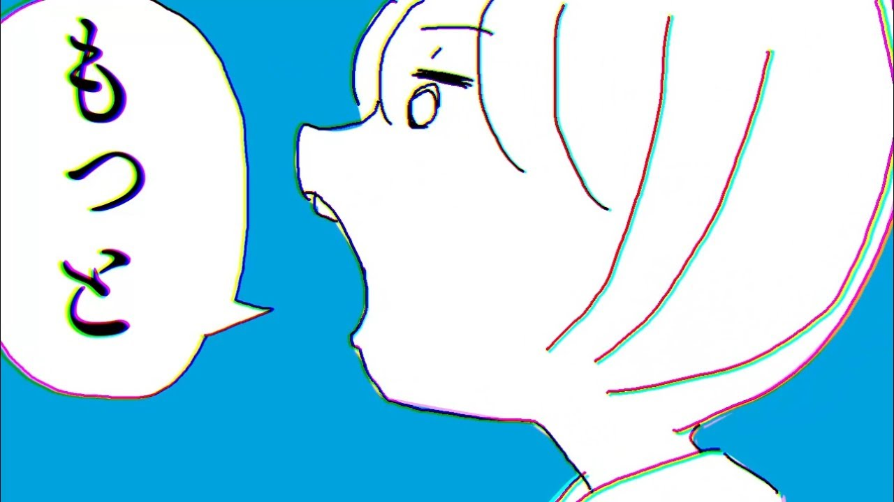

ランキングの仕組み
My Yoru Rankでは、2曲ずつ比較することでランキングを作成します。
どうやって順位が決まるの？
My Yoru Rankでは、ランキング対象の楽曲を小さなグループに分け、 2曲ずつ比較しながら小さなランキングを作ります。 そのランキング同士を少しずつまとめていくことで、 最終的に全体の順位を決めています。
楽曲を小さなグループに分ける
ランキング対象の楽曲を、比較しやすい小さなグループに分けていきます。
2曲を比較して順番を決める
表示された2曲から、より好きな曲を選んで小さなランキングを作ります。
小さなランキング同士をまとめる
それぞれのランキングの先頭から比較し、選ばれた曲を順番に並べながら1つにまとめます。
全体のランキングが完成
ランキング同士をまとめる作業を繰り返し、最後にすべての楽曲の順位を完成させます。
8曲で実際に見てみる
ここでは、ページ作成時点のYouTube公式MV再生数を参考に選んだ8曲を使って、 ランキングが作られる流れを見てみます。 なお、以下の比較結果や順位は仕組みを説明するための例です。
 ただ君に晴れ
ただ君に晴れ
 だから僕は音楽を辞めた
だから僕は音楽を辞めた

言って。 花に亡霊
花に亡霊
 春泥棒
春泥棒
 雨とカプチーノ
雨とカプチーノ
① 8曲を4曲ずつのグループに分ける
まず、8曲を4曲ずつの2つのグループに分けます。
グループA
ただ君に晴れ
だから僕は音楽を辞めた
花に亡霊
グループB
春泥棒
雨とカプチーノ
② 4曲を2曲ずつのグループに分ける
次に、4曲ずつのグループをさらに2曲ずつに分け、 2曲のグループを4つ作ります。
グループA-1
ただ君に晴れ
だから僕は音楽を辞めた
グループA-2
花に亡霊
グループB-1
春泥棒
グループB-2
雨とカプチーノ
③ 2曲ずつ比較して小さなランキングを作る
それぞれの2曲を比較し、より好きな曲を上位に並べます。 ここでは説明のため、次のような順位になったとします。
グループA-1
ただ君に晴れ
だから僕は音楽を辞めた
グループA-2
花に亡霊
グループB-1
春泥棒
グループB-2
雨とカプチーノ
④ 2つの小さなランキングを1つにまとめる
次に、順位が決まった2曲ずつのランキングを1つにまとめます。 それぞれのランキングの先頭にある曲を比較し、 より好きな曲から順番に新しいランキングへ追加していきます。
グループAをまとめる
1. ただ君に晴れ
2. だから僕は音楽を辞めた
2. 花に亡霊
比較1
ただ君に晴れ ＞ 言って。
→ 「ただ君に晴れ」が1位に決定
比較2
だから僕は音楽を辞めた ＜ 言って。
→ 「言って。」が2位に決定
比較3
だから僕は音楽を辞めた ＞ 花に亡霊
→ 「だから僕は音楽を辞めた」が3位に決定
グループAの4曲ランキング
- ただ君に晴れ
- 言って。
- だから僕は音楽を辞めた
- 花に亡霊
グループBも同じようにまとめる
グループBについても、グループAと同じように 2つのランキングの先頭から比較しながらまとめていきます。 ここでは、次の順位になったとします。
グループBの4曲ランキング
- 春泥棒
- 晴る
- ヒッチコック
- 雨とカプチーノ
⑤ 2つの4曲ランキングを1つにまとめる
最後に、グループAとグループBの4曲ランキングを、 ④と同じように先頭の曲から比較しながら1つにまとめます。 これで、8曲すべての順位が決まります。
比較1
ただ君に晴れ ＞ 春泥棒
→ 「ただ君に晴れ」が1位
比較2
春泥棒 ＞ 言って。
→ 「春泥棒」が2位
比較3
言って。 ＞ 晴る
→ 「言って。」が3位
比較4
晴る ＞ だから僕は音楽を辞めた
→ 「晴る」が4位
比較5
だから僕は音楽を辞めた ＞ ヒッチコック
→ 「だから僕は音楽を辞めた」が5位
比較6
ヒッチコック ＞ 花に亡霊
→ 「ヒッチコック」が6位
比較7
花に亡霊 ＞ 雨とカプチーノ
→ 「花に亡霊」が7位
比較7まで終わると、最後に残った「雨とカプチーノ」は 追加の比較をせず、そのまま8位に入ります。
8曲のランキングが完成
ただ君に晴れ
春泥棒
だから僕は音楽を辞めた
花に亡霊
雨とカプチーノ
なぜ全部の組み合わせを比較しなくていいの？
My Yoru Rankでは、すでに分かっている順位関係から、 直接比較していない曲同士の順番も判断できます。 そのため、すべての2曲の組み合わせを比較する必要はありません。
たとえば、すでに次の2つの比較結果が分かっているとします。
「ただ君に晴れ」は「だから僕は音楽を辞めた」より上、 「だから僕は音楽を辞めた」は「言って。」より上なので、 「ただ君に晴れ」と「言って。」を直接比較しなくても順番が分かります。
このように、すでに分かっている順位関係を利用することで、 すべての曲同士を直接比較しなくてもランキングを作ることができます。
マージソートという仕組み
ここまで見てきた「小さく分ける → 順番を決める → まとめる」という流れは、 「マージソート」と呼ばれる並べ替え方法をもとにしています。
通常のマージソートでは、数字などを小さなグループに分け、 大小を比較しながら順番にまとめていきます。
普通のマージソート
3 と 7 を比較
→ 小さい方の「3」を先に並べるMy Yoru Rank
「ただ君に晴れ」と「だから僕は音楽を辞めた」を比較
→ より好きだと選んだ曲を先に並べるつまりMy Yoru Rankでは、 数字の大小を比べる代わりに「どちらの曲がより好きか」をあなたが選ぶことで、 マージソートと同じ流れで楽曲の順位を決めています。
比較回数について
すべての曲同士を1組ずつ直接比較しようとすると、 曲数が増えるほど必要な比較回数は大きく増えていきます。
My Yoru Rankでは、すでに分かっている順位関係を利用しながら マージソートで順位を決めるため、 全117曲を対象にした場合でも、最大685回の比較でランキングを完成できます。
実際の比較回数は、選んだ楽曲数や比較の進み方によって変わりますが、 すべての組み合わせを直接比較する場合よりも大幅に少なくなります。
ランキングについての注意点
My Yoru Rankで作成されるランキングは、 あなたがそのとき行った比較結果をもとに作られます。
一部の順位は、これまでの比較結果から決まります
すでに分かっている順位関係を利用するため、 すべての曲同士を直接比較して順位を決めているわけではありません。
同じ条件でも結果が変わることがあります
比較するときの気分や好みの変化によって、 同じ楽曲・同じ条件でもランキング結果が変わることがあります。
ランキングは絶対的な順位ではありません
完成したランキングは、 そのときのあなたの比較結果をもとに作られた順位です。 自分の好みを振り返るひとつの結果として楽しんでください。